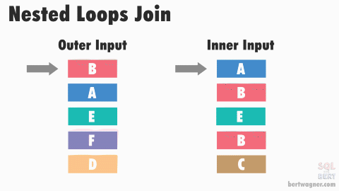
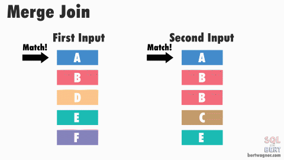
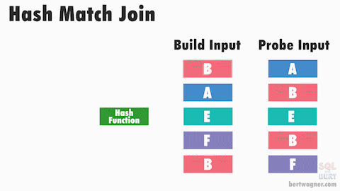
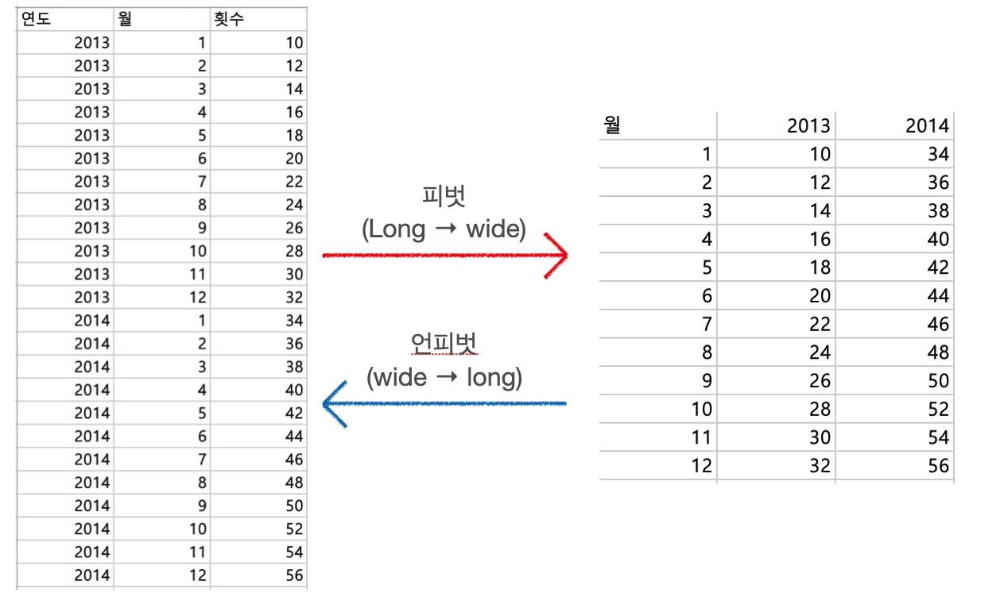

auto_arima를 사용해도 모형이 잘 적합이 안 되신다구요? auto_arima가 아무리 자동화된 알고리즘이라고 하지만 사람의 손을 꽤 타는 친구입니다. 왜 안 되는지, 어떻게 모형을 개선할지에 대해 아려면 이에 관련한 배경 지식이 필요합니다.,따라서, 이번 포스팅에서는 Python의 auto_arima 함수의 원리인 힌드만-칸다카르 알고리즘에 대해 설명하고, auto_arima를 쓰기 전 해야 할 일 (시각화)과 쓴 후 해야 할 일 (잔차 검정)에 대해 정리하였습니다.
이번 포스팅은 "실전 시계열 분석 통계와 머신러닝을 활용한 예측 기법 책"과 "Forecasting Principles and Practice"책을 기반으로 AR, MA, ARIMA 모형을 정리하고자 합니다.,제목은 "어디까지 파봤니"로 거만하지만 사실은 많이 안 파봤고, 저도 평소에 궁금했던 증명 과정과 헷갈렸던 내용들 위주로 정리해보았습니다. 언제나 그랬듯, 파이썬 예시와 함께 합니다.
최근 글또에서의 제 상태를 글럼프 [글 + 슬럼프]라 정의할 수 있을 것 같습니다.,이번 포스팅은 제가 왜 글럼프에 빠졌는지 이유들을 찾아보고 어떻게 하면 개선할 수 있는지에 대한 액션 아이템에 대해 고민하는 내용입니다.,또한, 제 근황도 알리며 글을 마무리하고자 합니다.
하게 됩니다. 그렇기 때문에 IP주소도 마찬가지로 테이블 주소처럼 사용할 수 있는 것입니다.
차집합 쿼리 NOT IN, OUTER JOIN, EXCEPT 비교
차집합을 사용하는 방법은 여러 가지가 존재하는데 어떤 쿼리가 가장 효율적일지에 대한 판단이 안 설 때가 있습니다. 이에 김정선님의 차집합 구하기, 어떤 쿼리가 좋을까? 글을 보고 쿼리별 성능 정보에 대해 자세히 이해할 수 있었습니다.
차집합이란 테이블 A에는 없는데 B에는 있는 정보를 구하고 싶을 때 사용합니다. 이에 쓸 수 있는 대표적인 쿼리는 NOT IN, OUTER JOIN, EXCEPT가 있고 이를 더 구체적으로 나누면 다음과 같습니다.
NOT IN
NOT IN + 상관 서브 쿼리
NOT IN + 상관 서브 쿼리 + TOP 1
상관 서브 쿼리 + TOP 1 + IS NULL
OUTER JOIN + IS NULL
EXCEPT + 서브 쿼리
해당 쿼리를 **Customer 테이블 (91행)**과 **Order 테이블 (830행)**로 설명하려 합니다. (아마도) Customer 테이블은 고객들의 정보를 담은 테이블이고, Order 테이블은 고객들의 주문 내역을 담은 테이블입니다. 그렇기 때문에 두 테이블 모두 고객들을 식별할 수 있는 식별자 (CustomerID)를 갖게 됩니다.
저희의 목적은 주문 내역이 없는 고객이 몇 명이나 되는지입니다. 그렇기 때문에 여러 차집합 쿼리를 통해서 Customer테이블에는 있으나 Order 테이블에는 없는 고객들 리스트를 확인하고자 합니다.
NOT IN
총평: Bad
NOT IN 쿼리는 가장 간단한 쿼리이지만 실행계획은 복잡합니다. Nested Loop 조인으로 인해 실제 I/O는 매우 많은 검색 수와 읽기 수를 보여주고 있으므로 성능이 좋지 않습니다.
참고로 SQL에서 조인을 수행할 때 실행 계획에 따라 크게 세 가지로 조인을 수행합니다. 각 조인에 따라 실행 속도가 크게 차이가 날 수 있기 때문에 쿼리를 최적화해 알맞은 조인을 선택하는 것이 중요합니다. 각 조인별 특징은 다음과 같습니다.
Nested Loop Join (NL Join)
좁은 범위에 유리한 성능을 보여줌
조인을 순차적으로 처리하며, 데이터에 랜덤하게 접근 (random access)
후행 테이블(Driven)에는 조인을 위한 인덱스 생성 필요
실행속도 = 선행 테이블 사이즈 * 후행 테이블 접근횟수

Merge Join (Sort Merge Join)
연결을 위해 데이터에 랜덤하게 액세스하지 않고 스캔을 하면서 수행
양쪽 테이블 처리 범위를 각자 접근해 정렬한 결과를 차례대로 스캔
마땅한 인덱스가 존재하지 않고 조인 연산자가 "="가 아닌 경우 NL 조인보다 유리

Hash Join
해싱 함수 기법을 활용해 조인을 수행
조인 대상이 되는 두 테이블 중에서 작은 테이블을 읽어 해시 영역에 해시 테이블을 생성하고 큰 집합을 읽어 해시 테이블을 탐색하면서 조인하는 방식
다만 해시 테이블을 생성하는 비용이 수반되기 때문에 해시 영역에 들어가는 테이블이 작을 때 효과적

NOT IN 을 이용한 쿼리는 다음과 같습니다.
1 2 3 4 5 6
select* from Customer where customerID NOTIN ( select customerID fromOrder )
NOT IN + 상관 서브 쿼리
총평: Not Bad
위의 서브 쿼리를 상관 서브 쿼리로 변경해 쿼리 상에서 직접적으로 Order 테이블과 Customer 테이블 간의 관계를 제한하였습니다. 여기서 상관 서브 쿼리는 바깥쪽 쿼리의 컬럼 중 하나가 안쪽 서브쿼리의 조건에 이용되는 처리 방식을 의미합니다. 그 결과, 조인 연산자를 Nested Loop 조인으로 선택했을 때 과도한 I/O를 해결하기 위한 대체 방안으로 Merge Join을 선택하게 됩니다. 그러나 Merge Join을 하기 위해서 인덱스 스캔을 하느라 전체 데이터를 액세스하고 있기 때문에 그렇게 좋다고 볼 순 없기 때문에 Not Bad! 입니다.
1 2 3 4 5 6 7 8
select* from Customer as c where customerID NOTIN ( --> NOT IN select customerID fromOrderas o where o.CustomerID = c.CustomerID --> 상관 서브 쿼리 )
NOT IN + 상관 서브 쿼리 + TOP 1
총평: Very Good!
아래 쿼리의 실행 계획을 확인해보면 내부 입력인 Order 테이블에 대해 Index Seek / Top / Filter의 연산자 순서를 거친 후에 Nested Loops 조인을 하게 됩니다.
이를 통해 반복적인 랜덤 I/O를 줄입니다. Merge Join에 비해 Nested Loop의 Stream 방식이 훨씬 응답 속도가 빠르기 때문에 필요한 데이터만 액세스하고 응답 속도도 빠르기 때문에 성능 상 우수한 쿼리입니다.
1 2 3 4 5 6 7
select* from Customer as c where customerID NOTIN ( select top 1 customerID --> top 1 fromOrderas o where o.CustomerID = c.customerID --> 상관 서브 쿼리 )
참고로 위 쿼리에서 NOT IN대신 NOT EXISTS를 사용하면 NL Join 대신 Merge Join으로 처리되지만, 전체 데이터를 조인으로 결합시키지 않고 결합에 필요한 데이터만 처리하게 됩니다. 결과적으로 NOT IN + 상관 서브 쿼리보다 약간 개선된 쿼리라 볼 수 있습니다.
1 2 3 4 5 6 7
select* from Customer as c where customerID NOTEXISTS ( select top 1 customerID --> top 1 fromOrderas o where o.CustomerID = c.customerID --> 상관 서브 쿼리 )
상관 서브 쿼리 + TOP 1 + IS NULL
총평: Very Good
해당 쿼리도 NOT IN + 상관 서브 쿼리 + TOP 1와 비슷하게 NL Join을 사용하고 Index Seek / Top 연산자를 이용해 검색 제한 조건을 처리할 수 있기 때문에 Very Good입니다.
다만 where절에서 CustomerID 컬럼을 명시하지 않아서 쿼리가 직관적이진 않은 것 같네요.
1 2 3 4 5 6 7
select* from Customer as c where ( select top 1 customerID fromOrderas o where o.CustomerID = c.CustomerID ) isnull
OUTER JOIN + IS NULL
총평: Very Bad!
해당 쿼리는 제가 자주 사용하던 가장 쉬운 쿼리인데요. Merge 조인으로 처리되어 I/O는 작지만 실행 계획을 보면 문제가 있음을 알 수 있습니다. 내부 입력에 해당하는 Order 테이블에서 조인 조건을 만족하는 830건을 모두 left join으로 결합하고, 그 결과 832건을 도출한 뒤에 마지막 filter 연산자에서 CustomerID is null 조건으로 실제 행 수인 두 건을 만족하게 됩니다.
결국 조인을 다 한 후에 where 절에서 null인 행만 필터링한다는 점에서 불필요한 데이터를 액세스하게 되기 때문에 좋은 쿼리라 볼 수 없습니다.
1 2 3 4 5
select c.* from Customer as C leftjoin Orders as O on c.CustomerID = o.CustomerID where o.CustomerID isnull
EXCEPT + 상관 서브 쿼리
총평: Not Good
수학적 개념인 차집합을 정확히 표현한 것이 EXCEPT 문입니다. 이 쿼리에서는 CustomerID만 select하고 있지만, 조인이나 서브쿼리로 실제 결과 집합으로 필요한 Customer 테이블의 다른 컬럼들을 처리해야 하기 떄문에 부가적인 I/O가 더해지기 때문에 성능은 Not Good입니다.
1 2 3 4 5
select CustomerID from Customer EXCEPT select CustomerID fromOrder
결과적으로 NOT IN + 상관 서브 쿼리 + TOP 1의 성능이 가장 좋으니, 성능 개선이 필요한 쿼리들이 있다면 이를 잘 활용해봐야겠습니다 😃
테이블 형태 바꾸기
엑셀에서 피벗 테이블 (Pivot table)을 사용하셨다면 테이블 형태를 변형하는 것에 대한 이해가 쉬울 것 같습니다. 피벗 테이블은 긴 형태로 된 테이블의 데이터를 요약하는 통계표입니다.
예를 들어, 아래 이미지에서 연도, 월에 따른 어떤 횟수를 담은 테이블이 있을 때, 이를 피벗 테이블로 만들면 우측 그림과 같습니다. 이렇게 피벗 테이블은 긴 테이블을 넓은 테이블로 요약하기 때문에 이해하기 쉽게 “Long To Wide” 테이블을 만드는 작업이라 하겠습니다. 이와 반대로 "Long to Wide"를 만드는 작업도 있겠죠? 이를 unpivot한다고 말합니다.

각각의 경우에 대해 SQL 쿼리로 어떻게 구현하는지 확인해봅시다.
Long to Wide (Pivot) 테이블 만들기
이를 쿼리로 구현하면 pivot 을 사용하고, 그 안에 min, avg, sum과 같은 그룹 함수를 사용해야 합니다. 기존의 select 절에 다음과 같이 추가합니다.
1 2 3 4 5
select* from #data pivot ( 그룹함수 (집계 컬럼) for 피벗 대상 컬럼 in (피벗 컬럼 값) ) as pvt
위 사진에서 피벗의 대상이 되는 컬럼은 연도이고, 피벗 컬럼 값은 2013과 2014입니다.또한 집계 컬럼은 횟수가 됩니다. 따라서 쿼리를 작성하면 다음과 같습니다.
1 2 3 4 5 6
select* from #data PIVOT ( -- 그룹함수 (집계 컬럼) for 피벗 대상 컬럼 in (피벗 컬럼 값) sum(횟수) for 연도 in ([2013],[2014]) ) as pvt
Wide to Long (Unpivot) 테이블 만들기
이를 반대로 pivot 형태로 요약되어 있는 컬럼을 Long하게 늘어뜨리는 경우 다음과 같이 쿼리를 작성합니다.
1 2 3 4 5 6 7
SELECT 월, 연도, 횟수 FROM ( SELECT 월, [2013], [2014] FROM pvt) p UNPIVOT (횟수 FOR 연도 IN ([2013],[2014]) )AS unpvt
저도 해당 쿼리를 외우진 못하지만 항상 어딘가에 저장해놓고 필요할 때마다 쓰고 있네요 ^^
이번 포스팅에서는 A/B 테스트의 확장판이라 볼 수 있는 MAB (Multi-Armed Bandits) 알고리즘에 대해 살펴보고, 이를 R 로 구현해보고자 합니다.,자세하게 구현할 알고리즘은 그리디 (Greedy), 입실론-그리디 (Epsilon-Greedy), UCB (Upper Confidence Bound), 톰슨 샘플링 (Thompson Sampling)입니다.